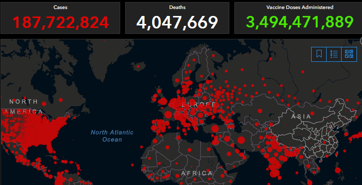

Marilah mencegah penyebaran Covid-19 yang lebih parah lagi dengan memulai dari diri sendiri dengan mengikuti prokes dimanapun berada.
Tentang SARS-CoV-2
SARS-CoV-2 atau severe acute respiratory syndrome coronavirus 2 merupakan virus yang menyebabkan COVID-19 yang menyerang sistem pernapasan manusia. Virus SARS-CoV-2 ini termasuk ke dalam keluarga virus corona dan merupakan virus corona kedua yang menyerang manusia setelah virus SARS pada tahun 2003.Virus SARS-CoV-2 diyakini menyebar kepada manusia melalui hewan liar yaitu Kelelawar, yang mana hewan liar ini diperjual belikan di pasar Wuhan, China yang menjadi tempat pertama penyebaran virus ini.
Namun, setelah diteliti lebih dalam oleh WHO ternyata jarak evolusioner antara virus kelelawar dan SARS-CoV-2 diperkirakan beberapa dekade, menunjukkan adanya hubungan yang hilang.
Dikatakan bahwa virus yang sangat mirip telah ditemukan di trenggiling, yang merupakan jenis mamalia lain, namun juga dicatat bahwa cerpelai dan kucing rentan terhadap virus Covid-19, yang menunjukkan bahwa mereka juga bisa jadi pembawa.
Direktur Jenderal WHO Tedros Adhanom Ghebreyesus mengakui bahwa dia telah menerima laporan tersebut selama akhir pekan dan mengatakan akan disampaikan secara resmi pada hari Selasa. “Kami akan membaca laporan dan membahas, mencerna isinya dan langkah selanjutnya dengan negara-negara anggota,” kata Tedros dalam konferensi pers di Jenewa.
Ada juga dugaan mengenai asal mula virus ini yaitu kebocoran laboratorium Wuhan. Laporan itu juga menepis kemungkinan virus melarikan diri dari laboratorium di Wuhan, sebuah teori spekulatif yang diungkapkan salah satunya oleh mantan Presiden AS Donald Trump. Dikatakan, kecelakaan laboratorium semacam itu jarang terjadi dan laboratorium di Wuhan yang menangani virus korona dan vaksin dikelola dengan baik.
Juga dicatat bahwa tidak ada catatan virus yang terkait erat dengan SARS-CoV-2 di laboratorium mana pun sebelum Desember 2019 dan bahwa risiko menumbuhkan virus secara tidak sengaja sangat rendah.
Gejala Covid-19
Masing-masing orang memiliki respons yang berbeda terhadap COVID-19. Sebagian besar orang yang terpapar virus ini akan mengalami gejala ringan hingga sedang, dan akan pulih tanpa perlu dirawat di rumah sakit.
Gejala virus corona tersebut dapat bertambah parah secara cepat dan menyebabkan gagal napas hingga kematian. Centers for Disease Control and Prevention (CDC) gejala infeksi virus 2019-nCoV dapat muncul mulai dua hari hingga 14 hari setelah terpapar virus tersebut.
Berikut uraian gejala yang dialami pasien terjangkit Covid-19 berdasarkan tingkat keparahannya dari yang paling ringan.
Gejala Ringan
Flu
Demam
Batuk kering
Mudah lelah
Sakit tenggorokan
Sakit kepala
Pilek
Gejala Sedang
Napas sesak dan berat
Mual dan muntah
Diare
Mulut kering
Sakit kepala
Nyeri pada tubuh
Penurunan nafsu makan
Penurunan indera penciuman
Gejala Berat
Demam tinggi (>7 hari)
Bibir, kulit, dan wajah membiru
Nyeri dada
Kulit terlihat pucat
Keluar keringat dingin
Linglung
Peningkatan detak jantung
Sakit kepala berat
Gejala Parah Komplikasi
Penyakit paru kronis (asma, PPOK)
Gangguan jantung (jantung koroner, gagal jantung)
Sistem imun lemah (HIV/AIDS, kanker)
Sistem imun lemah (diabetes, kemoterapi))
Obesitas
Kerusakan organ ginjal atau hati

Penyebaran di Dunia
Sejak muncul pada akhir Desember 2019 di Wuhan, Tiongkok, menurut data real-time dari Johns Hopkins CSSE (24 Februari 2021 14:22 WIB), virus ini sudah menyebar ke 192 negara di berbagai dunia, di mana sebanyak 112.116.627 orang terjangkit COVID-19. Korban meninggal dunia sebanyak 2.485.601 jiwa, sedangkan 63.299.560 orang sudah sembuh dari serangan virus ini
Penularan Covid-19
Penyebaran Covid-19 adalah melalui kontak fisik antarmanusia karena orang yang positif Covid mengandung virus pada droplet yang dikeluarkan. Dan untuk kasus penyebaran dari hewan,
sampai saat ini belum ada bukti ilmiah yang menyebutkan bahwa COVID-19 bisa ditularkan dari hewan ke manusia, pun sebaliknya. Untuk mengantisipasi berbagai macam penyakit yang dapat ditularkan oleh hewan, kamu harus melakukan pencegahan dengan selalu menjaga kebersihan tangan dan tubuh setelah bermain dengan hewan. Menurut Organisasi Kesehatan Dunia (WHO), hingga kini belum ada bukti yang menunjukkan hewan peliharaan dapat menyebarkan virus corona ke hewan lain, atau ke manusia.
Pencegahan Penyebaran
Untuk mengurangi resiko terjangkit Covid-19, vaksinasi adalah cara yang paling disarankan namun dengan tetap memeriksa keadaan tubuh apakah bisa diberi vaksin atau tidak. Namun sampai saat ini belum ada vaksin yang 100% mencegah penularan virus karena virus yang ada juga sudah bermutasi ke banyak varian
maka dari itu pemberian vaksin harus dibarengi dengan beberapa langkah pencegahan berikut:
Sering mencuci tangan dengan sabun dan air mengalir selama 20 detik hingga bersih
Hindari menyentuh hidung, mulut, dan wajah saat tangan dalam keadaan kotor atau belum dicuci
Tidak kontak langsung atau berdekatan dengan orang yang sakit
Tidak menyentuh hewan atau unggas liar
Membersihkan dan mensterilkan permukaan benda yang sering digunakan
Tutup hidung dan mulut ketika bersin atau batuk dengan tisu. Kemudian, buanglah tisu dan cuci tangan hingga bersih